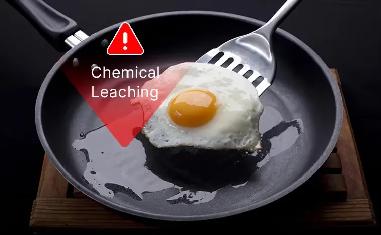
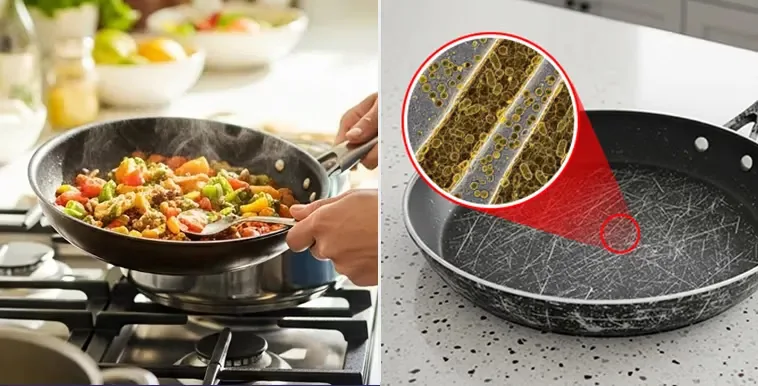
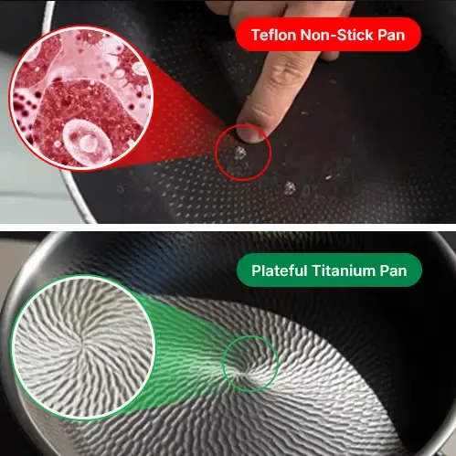
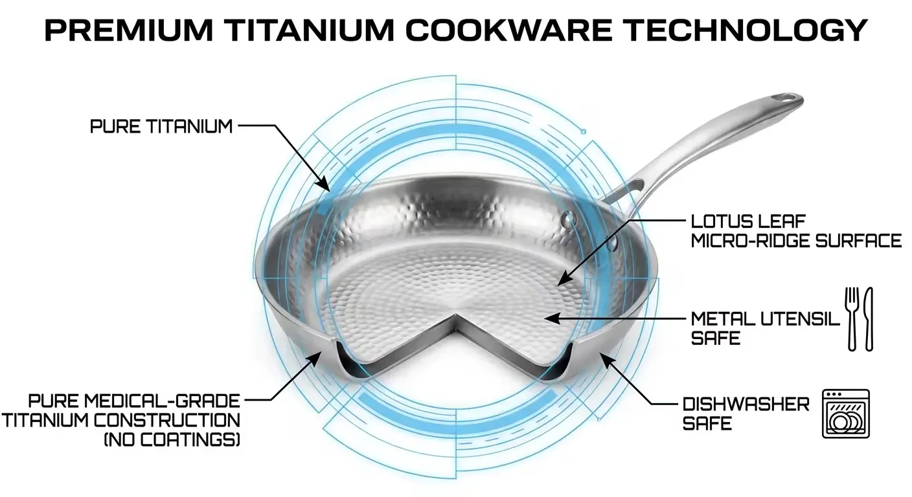
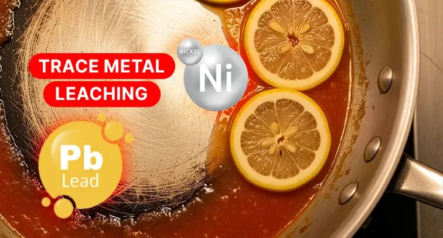
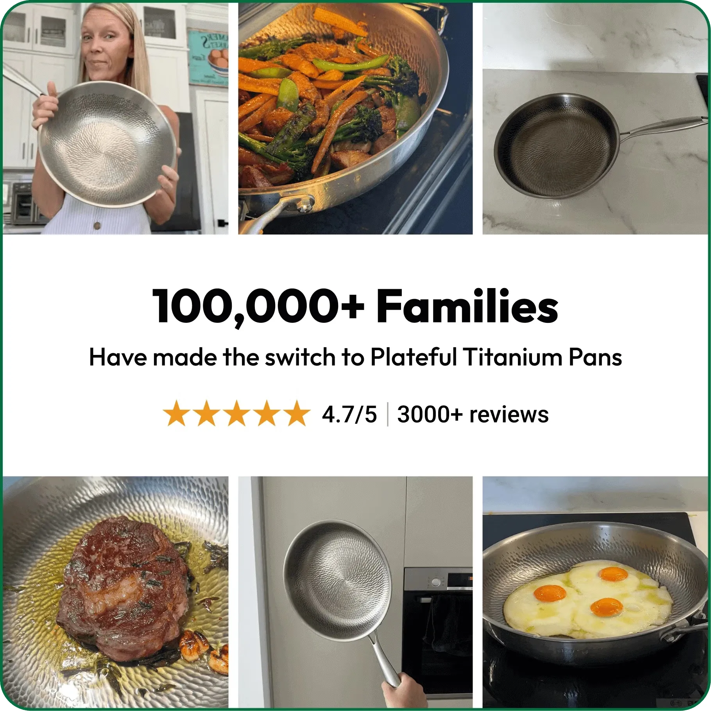
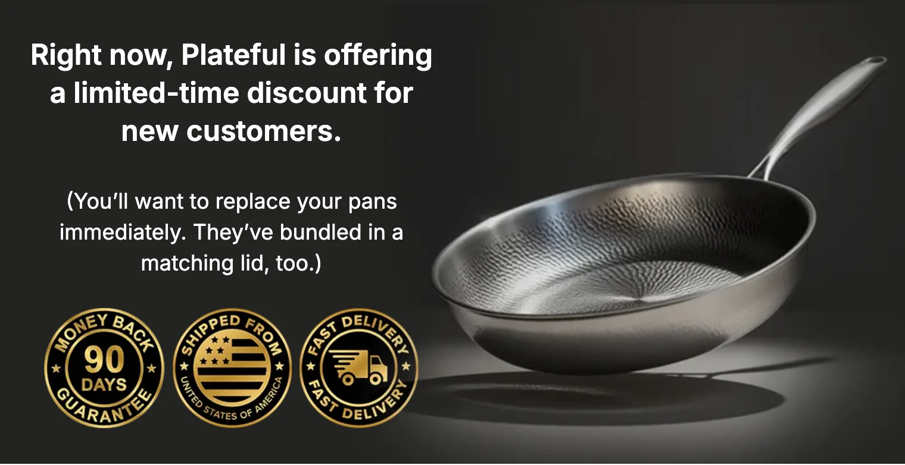

ER Doctor: "I Threw Out Every Pan in My Kitchen After What I Found"
After 20 years diagnosing mysterious symptoms, a Chicago ER doctor discovered a disturbing pattern connecting her patients – and then her own mother became a victim. What she uncovered will change how you think about your kitchen.
The Chicago ER doctor made a shocking discovery about everyday cookware that most doctors never discuss with patients
CHICAGO – "I've spent two decades in emergency rooms," says one emergency room physician at a major Chicago hospital. "But it took my own mother's health crisis for me to connect the dots about something we all use every single day."
The doctor (52), a respected emergency medicine specialist, admits she ignored the warning signs for years. "When you work in an ER, you see everything – heart attacks, strokes, accidents. But over the past five years, I kept seeing something strange."
Patients – mostly over 50 – would come in with unusual symptoms: persistent headaches, unexplained fatigue, respiratory issues that didn't match any obvious cause. "We'd run every test imaginable," she explains. "Everything would come back normal, and we'd send them home with a shrug."
The Phone Call That Changed Everything

Last spring, the doctor received a call that every daughter dreads. Her mother (74) had been rushed to the hospital with severe respiratory distress and confusion.
"My mom has always been healthy," she recalls, her voice still shaking. "She walks three miles every day, does yoga, eats organic. Seeing her in a hospital bed, struggling to breathe – I was terrified."
The doctor's mother, 74, was hospitalized with mysterious respiratory symptoms that stumped multiple specialists
Tests revealed elevated levels of toxins in her mother's blood, but doctors couldn't identify the source. "They asked about cleaning products, pesticides, workplace exposure," she says. "But my mom had retired ten years ago and lived a quiet life. She barely used any chemicals."
After three days in the hospital and countless consultations, Her mother was discharged with no clear answers. "Just avoid any chemical exposures," they told her. "We're not sure what triggered this."
The Investigation Begins

She couldn't let it go. "I'm a doctor. I'm trained to find answers. And I knew there had to be a connection I was missing."
She started reviewing her mother's daily routine in forensic detail. "I went through everything – her vitamins, her cosmetics, her cleaning supplies. Nothing stood out."
Then, during a follow-up visit to her mother's home, she noticed something. "Mom was making eggs for breakfast. She pulled out her favorite non-stick pan – the same one she'd been using almost daily for over a decade."
She remembered something from a medical conference years earlier – a presentation about PFOA (perfluorooctanoic acid), the chemical used in traditional non-stick coatings. "I had filed it away in my mind as 'interesting but not urgent.' Now, I was kicking myself."
The Research That Shocked Her

CDC testing reveals shocking contamination levels in the general population
That night, she dove into the medical literature. What she found made her physically ill.
"The more I read, the more terrified I became," she admits. "These chemicals don't just stay in the pan. When you heat traditional non-stick cookware above 500°F – which happens easily during normal cooking – they release toxic fumes."
A particularly disturbing study caught her attention: "In laboratory tests, pet birds exposed to fumes from overheated Teflon cookware died within minutes from severe respiratory failure."
"If it kills a bird that quickly," she says quietly, "what is it doing to us over years of daily exposure?"
The Pattern Finally Made Sense
She went back through her ER files, focusing on those mysterious cases from the past five years. With her new understanding, a disturbing pattern emerged.
"Almost every single one of those patients cooked regularly at home. Many were older, living alone, cooking for themselves daily. And when I followed up with them – which I normally wouldn't do – several mentioned they loved their old, reliable non-stick pans."
"I realized I'd been managing the symptoms for years without ever asking about the cause," she says. "And the worst part? I was doing the exact same thing in my own kitchen."
Why Traditional "Safe" Alternatives Don't Work

Traditional alternatives to Teflon each come with significant drawbacks
Once she understood the danger, she immediately threw out every non-stick pan in both her and her mother's kitchens. But finding a replacement proved frustrating.
Ceramic pans? "They're marketed as safe, but the non-stick coating chips off within months. Then you're cooking on exposed metal, and food sticks terribly. I went through three ceramic pans in six months."
Cast iron? "Too heavy for my mother to lift safely, and the maintenance is ridiculous. You have to season them, can't use soap, can't cook acidic foods. It's like a part-time job."
Stainless steel? "Food sticks like crazy unless you use huge amounts of oil. My mother is watching her cholesterol – she can't be drowning everything in fat."
"I was desperate," she admits. "I'm a doctor who just discovered I've been slowly poisoning my family. And I couldn't find a single pan that was both safe and actually worked."
The Medical Conference Discovery
Three months after her mother's hospitalization, She attended the American Medical Association's annual conference in San Francisco. During a session on environmental toxins, she struck up a conversation with a toxicologist from a leading research university.
"I mentioned my frustration with finding safe cookware," she recalls. "His eyes lit up. He said, 'You need to see what we use in our research labs.'"
The toxicologist explained that university research facilities had strict protocols about cookware. "We can't have any chemical contamination in our food preparation. For years, we struggled with the same issues you're describing."
"Then about two years ago, a colleague returned from a medical device conference with something completely different – a pan made from pure medical-grade titanium. No coatings. No chemicals. Just pure titanium – the same material we use in surgical implants."
The Technology That Changes Everything

Pure titanium technology offers the safety of materials used in permanent medical implants – with zero coatings
Medical-grade titanium is a remarkable material that most people encounter only in hospitals, despite it being one of the safest materials ever tested for human contact.
"Titanium was originally developed for aerospace and medical applications," explains the toxicologist. "It's used in hip replacements, knee implants, dental screws, and even cardiac devices because it's incredibly durable and completely biocompatible – meaning the human body doesn't react to it at all."
"A company called Plateful figured out how to manufacture a cooking pan from pure medical-grade titanium," he continued. "They created the Titanium Pro Pan – and the key breakthrough was using a nature-inspired lotus leaf pattern on the surface."
What makes the Titanium Pro Pan different? "It's not a coating," she explains emphatically. "That's the whole point. Every other 'non-stick' pan uses some kind of coating – and coatings always degrade, peel, or release chemicals. The Titanium Pro Pan is solid titanium. The non-stick property comes from microscopic ridges etched into the surface that mimic the lotus leaf – the same way water beads off a lotus plant. There's literally nothing to peel or flake off."
The Test That Convinced Her

The toxicologist had a Titanium Pro Pan in his office – he used it for demonstrations. "He cracked an egg into it with absolutely no oil or butter. The egg cooked perfectly and slid right out. Then he handed me a metal spatula and said, 'Go ahead, try to scratch it.'"
"I scraped that pan as hard as I could. Not a single mark," she says, still amazed by the memory. "Then he told me he'd been using that exact pan for demonstrations for three years, and it still looked brand new. Because it's solid titanium – you can use metal utensils, put it in the dishwasher, even use a knife directly on it. Nothing will damage it."
The next day, she ordered two Titanium Pro Pans – one for herself and one for her mother. "They arrived within 4 days with free shipping. I couldn't wait to try it."
Her Mother's Transformation

The doctor's mother now cooks daily with confidence, using barely any oil
Her mother was skeptical. "She'd been through so many pans at that point. 'Another one?' she said. 'Sweetheart, I'm tired of wasting money.'"
But she insisted. "I told her, 'Mom, I'm a doctor and I'm begging you – just try this one. If it doesn't work, I'll return it myself. They have a 90-day money-back guarantee.'"
The first morning her mother used the Titanium Pro Pan, she called her daughter in shock. "She said, 'I made scrambled eggs with just three drops of oil. They didn't stick at all. How is this possible?'"
Within weeks, the doctor noticed changes in her mother. "Her energy came back. The brain fog she'd been experiencing – we thought it was just aging – started clearing up. Her breathing improved."
"I can't prove it was entirely the cookware change," she says carefully, mindful of her medical training. "But the timing was remarkable. And she hasn't had a single hospital visit since."
What She Discovered About Oil Consumption

An unexpected benefit emerged: massive reduction in cooking oil use.
"My mother was using probably three to four tablespoons of oil per meal just to prevent sticking," she explains. "That's 300-400 extra calories per day – almost 3,000 calories per week just from cooking oil."
"With the Titanium Pro Pan, she uses maybe a teaspoon for an entire meal. Sometimes less. The lotus leaf micro-ridge surface naturally prevents sticking without any oil at all. She's lost eight pounds without changing what she eats – just by reducing the oil needed for cooking."
Why Doctors Don't Talk About This
The doctor now asks every patient about their cookware as part of routine health screenings
The doctor admits she's frustrated with the medical establishment. "We're trained to address symptoms, not investigate environmental causes. And honestly, most doctors don't make the connection."
"Think about it," she continues. "When someone comes to the ER with respiratory issues or chronic fatigue, we run standard tests. If nothing shows up, we send them home. Nobody asks, 'What kind of pans do you cook with?'"
"But maybe we should be asking. The research is there. The data is clear. These chemicals are accumulating in our bodies, and they're not harmless."
See Why Over 100,000 American Families Have Made the Switch
The Titanium Pro Pan™ is currently available with a special introductory discount for US customers
Check Availability NowWhat Real Users Are Saying
Since Plateful began offering the Titanium Pro Pan directly to American consumers, over 100,000 families have made the switch.

"I'm 67 and have been cooking my whole life. After reading about PFOA dangers, I was terrified. Bought a Titanium Pro Pan and I'm never going back. My eggs slide out perfectly with almost no oil. My daughter jokes that I finally learned to cook!"
— Margaret K., Boston, MA
"My wife has rheumatoid arthritis and couldn't lift our old cast iron pans. We tried ceramic but they scratched immediately. The Titanium Pro Pan is lightweight, nothing sticks, and it's holding up perfectly after 4 months of daily use. Plus it goes right in the dishwasher."
— Robert C., Phoenix, AZ
"As someone who had thyroid cancer, I'm hyper-aware of toxins. When I learned this pan has zero coatings – it's pure titanium, the same material in my dental implants – that gave me complete confidence. The pan works beautifully and I never have to worry about chemicals leaching into my food."
— Linda S., Seattle, WA
The Practical Benefits That Matter Most
Beyond safety, she emphasizes the everyday advantages:
Addressing the Cost Question
"I'll be honest," she says. "When I first heard the regular price was $459, I hesitated. That sounds like a lot for a pan."
"But then I did the math. I'd been replacing cheap non-stick pans every 8-12 months at $30-40 each. Over ten years, that's $300-400, plus the health risks I was taking. Over twenty years? Over $800 on disposable pans that were slowly poisoning us."
"The Titanium Pro Pan comes with a lifetime warranty. It will literally be the last pan you ever buy. Even at $459, it's more economical long-term – and infinitely safer."
Long-term cost analysis shows the Titanium Pro Pan is more economical than disposable cookware
The "Too Good to Be True" Skepticism
She acknowledges that her initial reaction was doubt. "I'm a scientist. When someone tells me a product solves every problem, I'm immediately skeptical."
"So I did what I always do – I researched. I looked up medical-grade titanium in peer-reviewed journals. I found decades of studies on its use in orthopedic implants, cardiac devices, dental implants, and spinal fusion hardware. This material has been placed inside millions of human bodies permanently – with virtually zero adverse reactions."
"Then I looked into the lotus leaf biomimicry technology they use for the non-stick surface. It's not a gimmick – it's a well-documented natural phenomenon. The surface of a lotus leaf has microscopic ridges that prevent anything from adhering to it. Plateful engineered the same pattern into pure titanium."
"At some point, you have to trust the data. And the data was overwhelming."
What She Wishes She'd Known Sooner
"If I could go back ten years, I would have thrown out every non-stick pan immediately," she says with visible regret. "How many of my patients' symptoms could have been prevented? How much of my mother's health decline could have been avoided?"
"I share my story now because I don't want others making the same mistake. You don't know what you don't know – until something forces you to find out."
How to Order (And What to Watch Out For)
She strongly emphasizes buying directly from Plateful's official website. "There are knockoffs flooding Amazon and other marketplaces claiming to be 'titanium pans.' Most of them are just stainless steel with a thin titanium coating – which defeats the entire purpose."
"The real Titanium Pro Pan is solid pure titanium with a Pure Titanium Certification. It comes with a 12-inch pan lid and wellness cooking eBooks included. If someone is selling a 'titanium pan' for $30, it's not the real thing."
The company offers a 90-day money-back guarantee. "That's three full months to test it," she notes. "If you're not completely satisfied, you can return it. But honestly, I don't know anyone who's returned theirs."
The 12-Inch Family Size
The Titanium Pro Pan comes in a generous 12-inch diameter with a 3-inch depth – making it the ideal family-size pan.
"The 12-inch size is perfect," she says. "It handles everything – from a simple two-egg breakfast to a full family stir-fry. The depth means you can use it as a skillet or a shallow pot. I've even made pasta sauces and stews in it."
"And because titanium is naturally lightweight despite its incredible strength, it's easy to handle even for my 74-year-old mother. She uses it every single day."
Her Recommendation for Fellow 50+ Americans
"Look, I'm not a salesperson," she concludes. "I'm a doctor who accidentally discovered something that improved my mother's health and gave me peace of mind."
"If you're over 50, you've probably been cooking with non-stick pans for decades. The cumulative exposure adds up. It may be contributing to health issues you've just accepted as 'aging.'"
"At the very minimum, throw out any non-stick pan that's scratched or peeling. That's when the danger is highest."
"But if you want a genuine solution – something with zero chemicals, zero coatings, backed by decades of medical research and a lifetime warranty – I can't recommend the Titanium Pro Pan enough."

The doctor and her mother now cook together weekly, using only pure titanium cookware
Make the Same Choice This Doctor Made for Her Family
✓ 90-Day Money-Back Guarantee
✓ Free Shipping Across the US
✓ Pure Titanium Certified
✓ Lifetime Warranty
✓ FREE 12" Pan Lid ($30 Value)
✓ FREE 6 Wellness Cooking eBooks ($180 Value)
Every order helps us reach our goal of 200,000 American families cooking safely by 2027


Her Final Advice
"Here's what I tell my patients: You can't control everything that affects your health. But you can control what you cook with."
"We spend thousands on organic food, filtered water, air purifiers. But then we cook that organic food in toxic pans. It doesn't make sense."
"Change your cookware. It's one of the easiest, most impactful health decisions you can make. And with the current introductory pricing, there's really no excuse not to."
"Your future self – and your family – will thank you."
Join 100,000+ Families Cooking Safely with the Titanium Pro Pan
Special introductory pricing available while supplies last
Claim Up To 50% Discount Now
90-Day Money-Back Guarantee | Free US Shipping | Lifetime Warranty
Reader Comments (237)